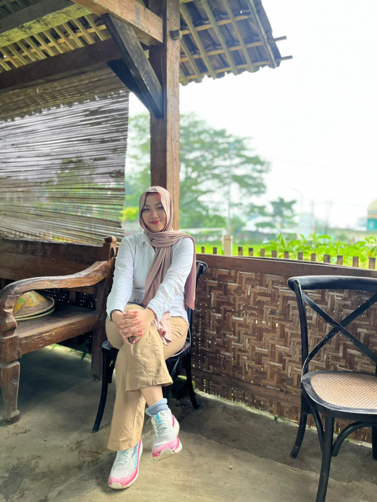
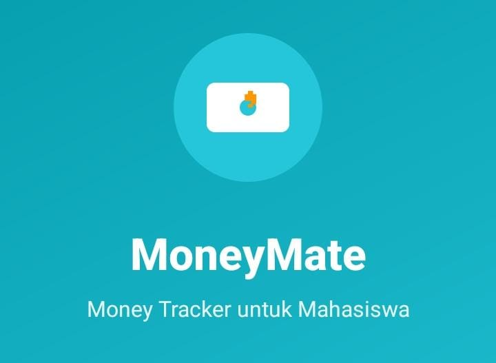
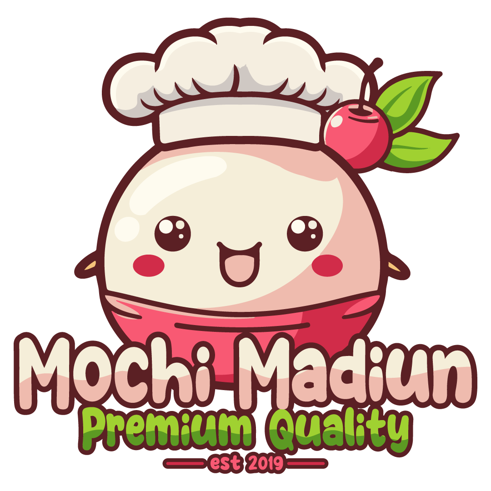
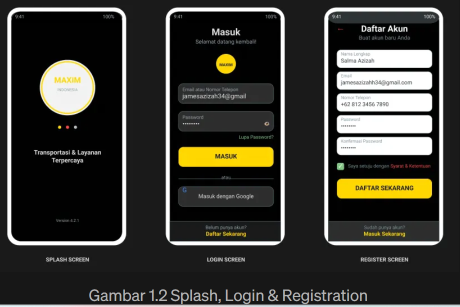

Mahasiswa Teknologi Informasi yang senang membangun aplikasi web dan mengolah data. Saya ingin menghadirkan solusi digital yang berguna dan mudah digunakan.
Hubungi Saya Lihat KaryaSaya Salma Nurul Azizah, biasa dipanggil Zizie, mahasiswa Teknologi Informasi di Politeknik Negeri Madiun. Saya tertarik pada web development, data science, dan AI, serta senang bekerja dalam tim untuk membangun solusi digital.
Keterampilan yang saya pelajari dan gunakan dalam tugas kuliah maupun proyek tim.
Karya, pengalaman, dan tulisan saya bisa dilihat langsung melalui profil berikut.
Kumpulan source code proyek tim maupun tugas kuliah, mulai dari aplikasi web sampai praktikum keamanan.
Buka GitHub → Profil ProfesionalRiwayat pendidikan, pengalaman, sertifikasi, dan koneksi profesional saya.
Buka LinkedIn → Tulisan & ArtikelArtikel dan catatan belajar saya seputar IT, UI/UX, dll.
Buka Medium →
MoneyMate is a simple student finance tracker that helps users record daily transactions, view clear financial summaries, and manage basic profile details. The app uses Room Database, RecyclerView, fragments, and a modern UI with tosca-orange accents, featuring three main menus: Transactions, Finance, and Profile.

A web-based stock management and point-of-sale (cashier) application for a mochi business that records sales transactions and automatically updates inventory. Built with Laravel to make sales recording and product management faster, more organized, and more accurate.

Studi kasus redesign UI/UX aplikasi Maxim: menganalisis pengalaman pengguna dan merancang ulang tampilan agar lebih mudah dan nyaman digunakan. Proses lengkapnya ditulis di Medium.
Sertifikat dan pelatihan yang pernah saya ikuti.
Tertarik berkolaborasi, berdiskusi proyek, atau sekadar menyapa? Kirim pesan langsung ke WhatsApp atau email saya.
Hubungi Saya via WhatsAppEmail: salmazizah26@gmail.com